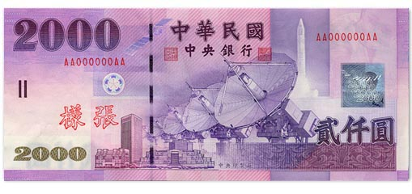
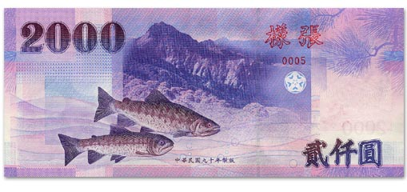
NT$2,000
兩千元紙鈔
圖案正面：碟型天線、中華衛星一號
背面：櫻花鉤吻鮭、南湖大山
發行日
面額小百科
認識日常會用到的新台幣紙鈔與硬幣：從面額、圖案主題到發行日期，再依自己的需要選擇怎麼配。
紙鈔 / 5 種面額


兩千元紙鈔
圖案正面：碟型天線、中華衛星一號
背面：櫻花鉤吻鮭、南湖大山
發行日
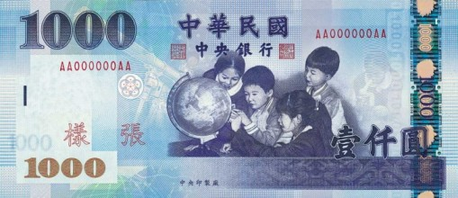
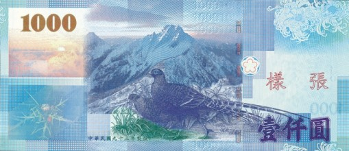
一千元紙鈔
圖案正面：教育、小學生上課
背面：玉山、帝雉
發行日
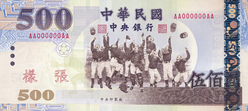
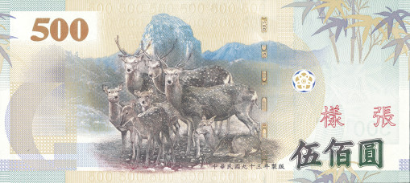
五百元紙鈔
圖案正面：體育、少棒運動
背面：大霸尖山、梅花鹿
發行日
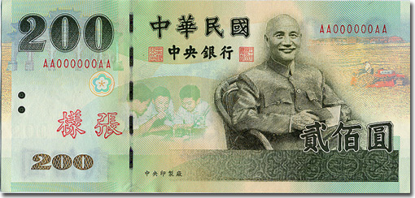
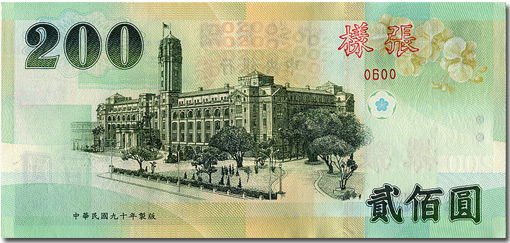
兩百元紙鈔
圖案正面：蔣公像
背面：總統府
發行日
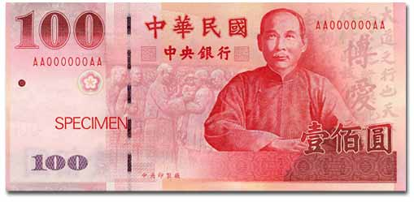
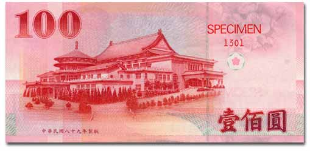
一百元紙鈔
圖案正面：國父像
背面：中山樓
發行日
硬幣 / 5 種常用面額＋輔角
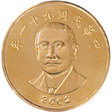
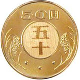
五十元硬幣
圖案正面：國父肖像
背面：面額字樣、稻穗
發行日
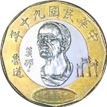
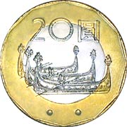
二十元硬幣
圖案正面：莫那．魯道、霧社抗日紀念碑
背面：雅美（達悟）族拼板舟
發行日
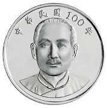
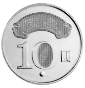
十元硬幣・流通版
圖案早期版：蔣公像、面額字樣
民國100年版：國父像、「國泰民安」
發行日1981.12.08
2011.01.11
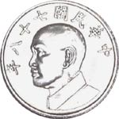
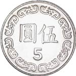
五元硬幣
圖案正面：蔣公像
背面：面額字樣
發行日
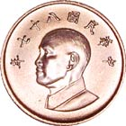
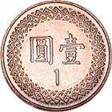
一元硬幣
圖案正面：蔣公像
背面：面額字樣
發行日
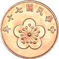
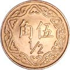
五角硬幣・選用
圖案正面：梅花
背面：「伍角」字樣
發行日
獨立介紹 / 不作為計算面額
這些紀念性流通硬幣各有主題與發行日期，以下獨立介紹；拆鈔計算器不會將紀念幣作為可選面額，也不會為它們產生拆分組合。
設計地球與臺、澎、金、馬圖像
設計已發行各類硬幣的重疊圖案
設計中華民國千禧年標誌、龍形圖案
設計國父肖像、「國運昌隆」與雙十煙火意象
設計蔣故總統經國先生肖像
設計蔣渭水先生肖像
資料整理自中央銀行「流通硬幣」資料頁；此區僅作面額文化介紹，不代表計算器可用的現金組合。
獨立介紹 / 不作為額外計算面額
中央銀行曾發行紀念性鈔券，兼具紀念與流通性質。此區介紹新臺幣發行五十週年紀念性塑膠鈔券，以及慶祝建國一百年的壹佰圓券；不將紀念版別另增為計算面額。
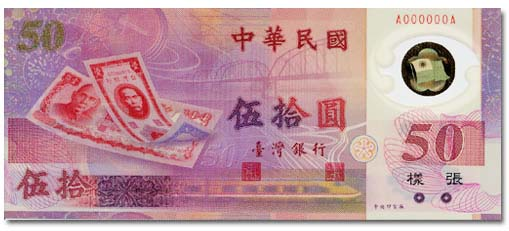
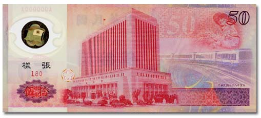
設計正面呈現新臺幣發行歷史及交通、通訊圖像；背面為中央銀行大樓與傳統圖飾。
材質塑膠
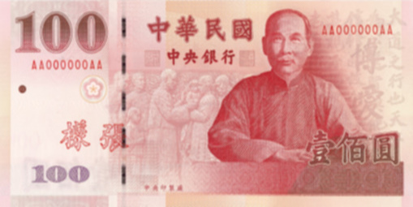
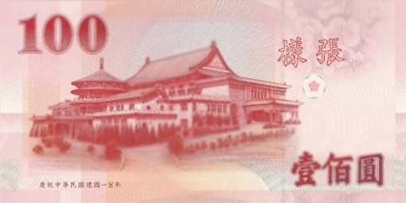
設計正面為國父肖像；背面為陽明山中山樓，並印有建國一百年紀念文字。
建國百年壹佰圓券與現行鈔券同時流通；其三開典藏版是三張連號鈔券的典藏包裝。計算器按面額處理，無法區分百元券的設計版別；NT$50 紀念性塑膠鈔券則不在可計算面額中。
資料與圖片來源：中央銀行「新臺幣鈔票」、「流通硬幣」、「新臺幣發行五十週年紀念性塑膠鈔券」、「慶祝建國一百年壹佰圓券」及「中華民國建國一百年流通拾圓硬幣」。圖片未裁切或重繪，僅依版面縮放。依中央銀行政府網站資料開放宣告與政府資料開放授權條款第 1 版標示來源；不代表中央銀行認可或背書。日期以西元年呈現。
怎麼開始
輸入整數金額；若包含 5 角，先在計算器開啟輔角。
切換只用紙鈔或硬幣，也能取消不想使用的面額。
查看精確配法，並比較件數最少、硬幣最多與紙鈔最少的解。